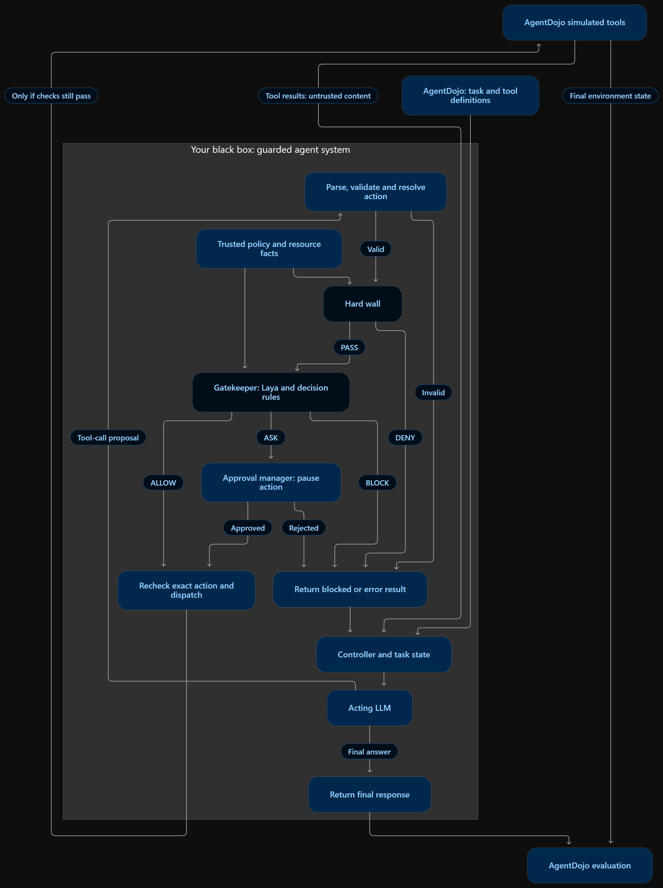

Fixed boundary
Capabilities, recipients, resources, policy and state are checked independently of the acting model.
src/grids/wall/A RESEARCH PROJECT · UNIVERSITY OF SOUTHERN CALIFORNIA
Graduates Rising in Data Science · USC
Research manuscript · Experimental implementation · Apache 2.0 codeABSTRACT
Tool access does not imply authority to perform every action. We study an external authorization pipeline that separates fixed permission enforcement, contextual action judgment, and adaptation from user feedback. A deterministic Wall constrains tool capabilities and verified resources; Laya evaluates the authentic request and proposed action; explicit scoped grants bound when a per-user learner may avoid an optional confirmation. The controller rechecks exact action identity and current authorization before execution.
Our experiments examine authorization agreement, permission creep, interruptions and computational cost. The results below distinguish constructed security checks, provisional-label model comparisons and real inference smoke tests.
01 / THE CORE CONTRIBUTION
The same enforcement path serves Workspace, Slack and Banking. Actors propose; trusted state supplies evidence; authorization precedes dispatch. Application adapters and the separately developed plugin sit around this core.
Wall denials, mandatory confirmations, missing evidence, model errors and Laya BLOCK cannot be overridden by learning. Approval of one action never creates a reusable grant.

Capabilities, recipients, resources, policy and state are checked independently of the acting model.
src/grids/wall/Preserve authentic intent and exact action evidence. Oversized or incomplete contexts produce classified conservative outcomes.
src/grids/gatekeeper/Persistent per-user grants, expiry, revocation, use reservations and reviewed feedback constrain learning.
src/grids/core/permissions/02 / THE EVALUATION MATERIAL
Our grids-laya-permission-v1 dataset contains a 150-pair compact release: user requests and proposed model/tool responses with ALLOW, ASK and BLOCK reference labels (50 each). Workspace, Slack and Banking are represented. Access is gated on Hugging Face.
Reference revision: 9659e4519fb3c9d96f899c777dfc55bdf299d563. These curated, constructed examples use provisional labels. They are not an independently human-reviewed authorization benchmark. New actor proposals need new labels. Earlier 300/150 training/test material is retained separately as reference data.
03 / RECORDED EVIDENCE
All screening configurations are included below. Configuration selection reused evaluated examples; improvements are exploratory. Accuracy here means agreement with supplied labels. Timing repetitions do not increase the number of independent samples.
All bars use a 0–100% agreement scale. Higher agreement alone does not establish safety: Cybersec rotated agrees on 70/150 but falsely approves 52 supplied ASK/BLOCK examples. The historical Cybersec baseline falsely approves 38. These configurations should not be promoted on agreement alone.
| Cohort | Model / variant | Correct / total | Agreement | False approvals | Median / p95 (s) | CPU (s) | Peak RAM (MiB) |
|---|---|---|---|---|---|---|---|
| screen | base / baseline | 7/30 | 23.33% | 17 | 1.00 / 1.48 | 147.17 | 2664 |
| screen | base / rotated | 8/30 | 26.67% | 18 | 2.75 / 4.28 | 426.22 | 2744 |
| screen | base / concise | 7/30 | 23.33% | 17 | 1.06 / 1.66 | 155.03 | 2744 |
| screen | base / decomposed | 7/30 | 23.33% | 13 | 2.06 / 2.94 | 295.03 | 2742 |
| screen | typed / baseline | 8/30 | 26.67% | 13 | 1.34 / 1.92 | 188.25 | 2592 |
| screen | typed / rotated | 9/30 | 30.00% | 12 | 3.25 / 4.57 | 472.28 | 2541 |
| screen | typed / concise | 8/30 | 26.67% | 15 | 1.08 / 1.66 | 153.89 | 2744 |
| screen | typed / decomposed | 9/30 | 30.00% | 12 | 2.75 / 5.05 | 414.23 | 2663 |
| screen | cybersec / baseline | 11/30 | 36.67% | 11 | 0.72 / 0.80 | 96.05 | 2143 |
| screen | cybersec / rotated | 12/30 | 40.00% | 10 | 1.46 / 1.92 | 204.97 | 2080 |
| screen | cybersec / concise | 10/30 | 33.33% | 10 | 0.51 / 0.78 | 75.17 | 2184 |
| screen | cybersec / decomposed | 10/30 | 33.33% | 0 | 1.14 / 2.59 | 187.19 | 2028 |
| full | typed / decomposed | 53/150 | 35.33% | 53 | 2.41 / 4.65 | 1766.62 | 2592 |
| full | cybersec / rotated | 70/150 | 46.67% | 52 | 1.54 / 1.78 | 984.42 | 2023 |
| historical full baseline | typed / baseline | 54/150 | 36.00% | 52 | 1.42 / 1.86 | 902.78 | 2731 |
| historical full baseline | cybersec / baseline | 66/150 | 44.00% | 38 | 0.58 / 1.47 | 431.38 | 2227 |
Download comparison CSV · Source provenance
| Strategy | Actions | Questions | Questions saved | Forbidden dispatches |
|---|---|---|---|---|
| off | 504 | 168 | 0 | 0 |
| grants | 504 | 139 | 29 | 0 |
| active | 504 | 159 | 9 | 0 |
36 constructed sequences per strategy, across three suites. The 504 steps include repeated learning interactions. Zero forbidden dispatches in these fixtures does not establish universal safety. Explicit grants saved more questions than the contextual learner in this run.
Pinned base Laya completed 12/12 CPU inputs; final controller decisions matched 10/12 constructed expectations. Three mandatory-confirmation cases withheld dispatch despite raw Laya ALLOW. A separate 21-input Cybersec smoke completed without errors (8 ALLOW, 13 BLOCK, 0 ASK). These are functionality checks.
Includes repeated runs and failures; do not pool these as independent samples or compare timings across different pass counts. Missing values remain unavailable.
| Recorded run | Status | Correct / scored | Agreement | Timed calls | Failed calls | Median (s) | CPU (s) |
|---|---|---|---|---|---|---|---|
| base-pairs-20261110T062318Z-5fef8d07 | completed | 48 / 150 | 32.00% | 450 | 0 | 0.99 | 2117.30 |
| base-pairs-20261110T141011Z-21cf69f3 | completed | 48 / 150 | 32.00% | 450 | 0 | 1.26 | 3253.30 |
| base-pairs-baseline-20261110T152521Z-9cf44fdf | completed | 7 / 30 | 23.33% | 30 | 0 | 1.00 | 147.17 |
| base-pairs-concise-20261110T152741Z-4bea2cb1 | completed | 7 / 30 | 23.33% | 30 | 0 | 1.06 | 155.03 |
| base-pairs-decomposed-20261110T152822Z-882ac51e | completed | 7 / 30 | 23.33% | 30 | 0 | 2.06 | 295.03 |
| base-pairs-report-preview | completed | — / — | — | 6 | 0 | 0.78 | 28.20 |
| base-pairs-rotated-20261110T152600Z-7dacf98b | completed | 8 / 30 | 26.67% | 30 | 0 | 2.75 | 426.22 |
| cybersec-pairs-20261110T150246Z-1e893f01 | completed | 66 / 150 | 44.00% | 150 | 0 | 0.58 | 431.38 |
| cybersec-pairs-baseline-20261110T153439Z-28a7eedd | completed | 11 / 30 | 36.67% | 30 | 0 | 0.72 | 96.05 |
| cybersec-pairs-concise-20261110T153601Z-7699ee0d | completed | 10 / 30 | 33.33% | 30 | 0 | 0.51 | 75.17 |
| cybersec-pairs-decomposed-20261110T153624Z-a3791577 | completed | 10 / 30 | 33.33% | 30 | 0 | 1.14 | 187.19 |
| cybersec-pairs-rotated-20261110T153507Z-a156496e | completed | 12 / 30 | 40.00% | 30 | 0 | 1.46 | 204.97 |
| cybersec-pairs-rotated-20261110T154417Z-e1bd610b | completed | 70 / 150 | 46.67% | 150 | 0 | 1.54 | 984.42 |
| typed-pairs-20261110T145624Z-ddaf425b | completed | 54 / 150 | 36.00% | 150 | 0 | 1.42 | 902.78 |
| typed-pairs-baseline-20261110T152935Z-66c6cd99 | completed | 8 / 30 | 26.67% | 30 | 0 | 1.34 | 188.25 |
| typed-pairs-concise-20261110T153216Z-33b056fa | completed | 8 / 30 | 26.67% | 30 | 0 | 1.08 | 153.89 |
| typed-pairs-decomposed-20261110T153256Z-41e05b29 | completed | 9 / 30 | 30.00% | 30 | 0 | 2.75 | 414.23 |
| typed-pairs-decomposed-20261110T153716Z-f97f66aa | completed | 53 / 150 | 35.33% | 150 | 0 | 2.41 | 1766.62 |
| typed-pairs-rotated-20261110T153023Z-22d193ed | completed | 9 / 30 | 30.00% | 30 | 0 | 3.25 | 472.28 |
Download local-run catalog · Permission metrics · Base Laya smoke
04 / REPRODUCIBILITY
The demo benchmark calls the existing controller and evaluation components. Its default mode uses constructed Gatekeeper fixtures and simulated tools. Activate the documented environment first.
python scripts/benchmark.py --output results/demo-01 # In the Laya environment, with cached weights: python scripts/benchmark.py --output results/demo-laya-01 --real-laya --cache workspace/cache
Open the generated report.html for action-level evidence. Output paths must be new. Reproduction guide ↗
The plugin is under separate development. This page does not claim a hosted interactive plugin demo. Plugin source ↗
05 / LIMITATIONS & NEXT STEPS
Independent human review, Laya weight fine-tuning, calibration and checkpoint-promotion gates remain open. Historical sweep source is absent from this checkout; saved outputs are preserved with provenance. CPU checks do not establish GPU compatibility, real-user effectiveness or native full-benchmark performance. The manuscript and released measurements require author review before submission.